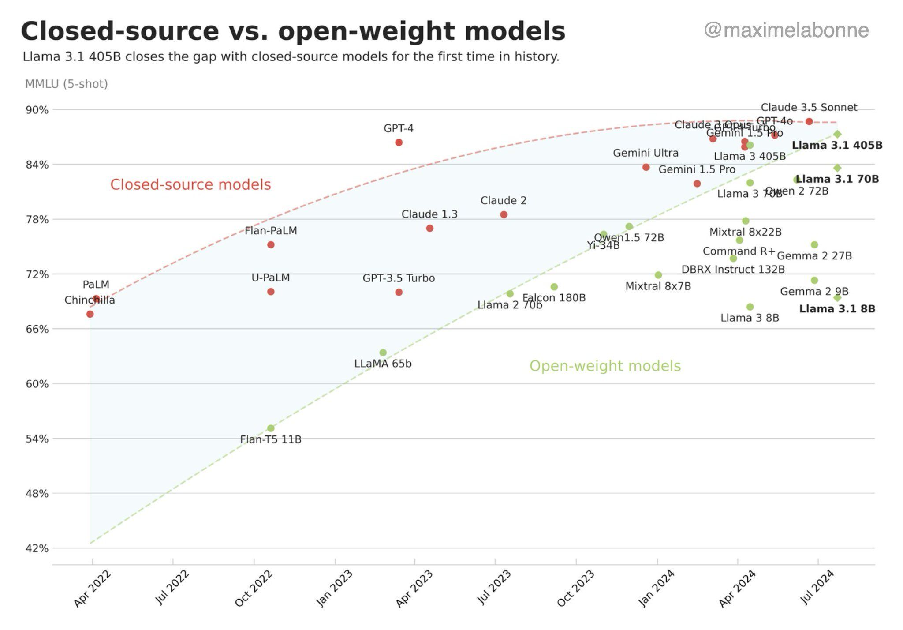

Public page automatically published

Introduction to Large Language Models
- Large Language Models (LLMs) like OpenAI’s GPT series have revolutionized the field of artificial intelligence, offering unprecedented capabilities in natural language understanding and generation. These models are trained on vast amounts of text data, enabling them to perform a wide range of language-based tasks, from writing and translation to answering questions and generating code.
What to use and when
- Start with Simple API Calls:
- Initially, utilize third-party APIs that serve your needs without complicating your system. This is the most straightforward and cost-effective solution.
- If third-party APIs meet your requirements in terms of functionality, privacy, cost, and latency, there’s no need to progress to more complex solutions.
- Deploy Pre-trained Models:
- If API solutions are insufficient due to privacy, cost, or latency issues, consider deploying a generic, pre-trained model (like MixL or LLaMA) behind your own API.
- This step involves a bit more complexity and control over the data but remains relatively simple.
- Curate Context and Improve Prompts:
- Enhance the output quality by curating in-context examples and optimizing prompts. This step aims to extract better performance from the existing deployed model with minimal changes.
- Integrate Retrieval Systems:
- If further improvement is needed, integrate a retrieval system to complement the model’s responses, based on the available latency and the complexity it introduces to your system.
- Fine-tune on Specific Data:
- When adjustments and retrieval integrations aren’t sufficient, proceed to fine-tune the model on a targeted dataset. This step tailors the model more closely to your specific requirements.
- Swap for a Larger Model or Pre-train Your Own:
- If fine-tuning does not achieve the desired outcomes, consider swapping in a larger pre-trained model or pre-training your own model for more significant customization and improvement.
- This can involve domain adaptation through further pre-training on a relevant corpus, followed by fine-tuning.
- Iterate and Add Complexity as Necessary:
- Continue iterating, adding layers of complexity only as needed. This approach ensures that you only invest in higher compute and development costs when there’s a clear benefit.
- Simplify and Streamline for Deployment:
- Throughout this process, aim to simplify and streamline solutions for deployment. Consider the target audience and operationalize the solution in a way that makes it accessible and practical for them.
Key Resources and Projects
- Web LLM Project: A pioneering initiative bringing LLM functionalities to the browser, enabling users to interact with these models directly from their web interface. Web LLM Project
- This project demonstrates the feasibility and potential of deploying complex AI models in consumer-friendly interfaces.
- Browser-based Models: The Web LLM project introduces a browser-based implementation of the vicuna-7b Large Language Model. This project showcases the practical application of LLMs in web environments, enabling users to interact with sophisticated AI models directly within their browsers. The initiative highlights the evolving accessibility of AI technologies, bringing powerful computational linguistics tools to a broader audience without the need for specialized hardware.
Interfaces and Scaling
- The evolution and scaling of interfaces for Large Language Models have significant implications for user interaction and the accessibility of AI technologies. This area explores the integration of LLMs into various interfaces, including immersive spaces and metaverse applications, which opens up new avenues for interaction and engagement with AI.
Key Projects and Discussions
- Immersive Spaces: The potential of generative AI in metaverse applications and game development is vast, offering new ways to create engaging and dynamic environments. While specific links to projects or discussions were not provided in the initial extraction, this area highlights the intersection of LLMs with virtual worlds, suggesting a future where AI can contribute to more immersive and interactive digital spaces.
- Generative AI in the Metaverse: An insightful article on why now is the time to use generative AI in your metaverse company, outlining potential impacts and considerations for developers and businesses. [Why You Should Use Generative AI in Your Metaverse Company
- The Ghost Howls](https://skarredghost.com/2023/02/11/generative-ai-metaverse-company/)
- This article provides a comprehensive overview of how generative AI can revolutionize metaverse applications, offering a balanced view on the opportunities and challenges.
- AI-Assisted Graphics in Game Development: Exploring the use of AI to assist in graphics creation for games, enhancing realism and efficiency. AI-Assisted Graphics
- This link showcases practical applications of AI in game development, highlighting advancements in creating more immersive and visually stunning gaming experiences.
Optimizations
- Optimizations are critical for enhancing the performance and efficiency of Large Language Models. This section covers various techniques and tools that have been developed for this purpose.
Key Techniques and Tools
- DeepSpeed: DeepSpeed by Microsoft is an advanced deep learning optimization software suite that significantly accelerates the training of deep learning models. It offers various features like model parallelism, gradient accumulation, and sparsity to achieve unprecedented scale and speed. DeepSpeed is pivotal for researchers and practitioners aiming to push the boundaries of model size and training speed.
- Nvidia DASK: Tutorial for distributed computing with GPUs provides insights into using Nvidia DASK for distributed computing, enhancing the performance of LLMs by leveraging GPU resources more efficiently. This tutorial is a valuable resource for anyone looking to understand and implement distributed computing with GPUs.
- SWARM Training Paper: SWARM: A Paradigm for Distributed Training of LLMs discusses innovative methods for distributed training of large language models, addressing challenges related to scalability and efficiency. The SWARM approach represents a significant advancement in distributed training techniques, offering insights into overcoming the limitations of traditional training methodologies.
Projects and Implementations
- Browser-based Models: A significant advancement in making LLMs accessible via web interfaces. The Web LLM project discusses a browser-based version of the Vicuna-7b Large Language Model, showcasing how LLMs can be integrated into web applications, offering an accurate and fast model capable of handling complex prompts. This project exemplifies the potential of LLMs in providing accessible AI-powered applications directly from a web browser.
Interfaces and Scaling
- Immersive Spaces: Exploring the integration of generative AI, including LLMs, in metaverse applications and game development. The potential for immersive, AI-driven spaces is vast, ranging from enhanced user experiences to novel forms of interaction. Why you should use generative AI in your metaverse company
- This article discusses the implications and opportunities of incorporating generative AI in metaverse platforms.
Optimizations
- DeepSpeed: A software suite by Microsoft aimed at accelerating deep learning tasks. DeepSpeed offers innovative tools for enhancing the performance and efficiency of LLMs, making it easier to scale up training and inference operations. DeepSpeed GitHub
- DeepSpeed is pivotal in addressing the computational and memory challenges of training large models, offering solutions to significantly reduce training times and resource consumption.
Training & Fine-tuning
- Methods and Tools: Enhancing LLM performance through innovative training and fine-tuning techniques. Resources cover a range of strategies, including LoRA training, deep retraining, pruning techniques, and model merging strategies.
- LoRA Training Insights
- An insightful blog post on the application and benefits of Low-Rank Adaptation (LoRA) in training LLMs, providing a deep dive into how LoRA can be used to fine-tune models efficiently.
- BMTrain Toolkit
- BMTrain presents an efficient framework for training large models, focusing on distributed training while maintaining simplicity in code structure, making it accessible for large-scale model training.
Evaluation
- Comparison and Detection: Tools and methodologies for assessing LLM performance and detecting AI-generated text. This includes evaluations of model outputs and capabilities.
- AI-Generated Text Detection
- A comprehensive study on the reliability of detecting AI-generated text, highlighting the challenges and methodologies involved in distinguishing between human and AI-generated content.
Applications
- Consumer Tools Using LLMs: Showcasing the application of LLMs in creating innovative consumer tools.
- CustomGPT for Personalized Customer Experiences
- CustomGPT leverages LLMs to offer personalized interactions, demonstrating the potential of AI in enhancing customer service and engagement.
Infrastructure
- Hosting and Deployment: Solutions for effectively deploying LLMs, addressing the technical challenges involved.
- Rubbrband for Auto Deployments
- Rubbrband provides a streamlined solution for deploying LLMs, emphasizing ease of use and efficiency in managing AI model deployments.
Multilingual and Abstract Translation
- Projects dedicated to improving LLM capabilities in translation, fostering better understanding and communication across languages.
- SeamlessM4T by Facebook Research
- An innovative project aimed at enhancing multilingual translation, showcasing efforts to bridge language barriers and improve communication globally.
Additional Training & Fine-tuning Resources
- Mesh TensorFlow for Distributed Training: A tool for distributing computation across different hardware to enhance training efficiency. Mesh TensorFlow
- Enables sophisticated distribution strategies, optimizing the use of hardware resources during model training.
- Colossal-AI for Easy Distributed Training: Provides user-friendly tools for distributed deep learning, making it simpler to scale up training processes. Colossal-AI
- Aims to simplify the transition from single-device to distributed model training, supporting more efficient utilization of computing resources.
- BMTrain for Large Model Training: Focuses on training large models with simplicity and efficiency, even in distributed settings. BMTrain
- An efficient toolkit designed for simplicity in training large-scale models, supporting distributed training with ease.
- LoRA Training Insights: Discusses the benefits and application of Low-Rank Adaptation (LoRA) for efficient model fine-tuning. LoRA Training Insights
- Provides a deep dive into how LoRA can be utilized to fine-tune models efficiently, offering significant insights into the process.
Evaluation
- Comparison and Detection
- LLM QA Evaluation on Wikipedia: An insightful comparison of different LLMs’ performance on QA tasks using Wikipedia as a benchmark. LLM QA Evaluation Wikipedia
- This study offers a comparative analysis highlighting the strengths and weaknesses of open-source vs closed-source LLMs in handling QA tasks, providing valuable insights for both developers and users.
- LLM Zoo: A collection of various LLMs to explore and compare their capabilities. LLMZoo GitHub
- A unique repository that provides access to a wide range of LLMs, facilitating exploration, comparison, and understanding of different models’ functionalities and performance.
- Can AI-Generated Text be Reliably Detected?: Addresses the critical question of distinguishing between human and AI-generated text. AI-Generated Text Detection Study
- This paper delves into the challenges and methodologies involved in detecting AI-generated text, offering insights into the reliability of current detection techniques.
Applications
- Consumer Tools Using LLMs
- Innovative Tools for Personalized Customer Experiences: LLMs are increasingly used to create tools that offer personalized interactions for users, enhancing ecommerce experiences and facilitating efficient email management.
- CustomGPT
- A platform enabling businesses to create their own chatbots using their content, leading to accurate and personalized customer interactions. This tool exemplifies the use of LLMs in improving customer service and engagement.
- AnythingLLM
- A full-stack personalized AI assistant application that turns documents or content into reference data for intelligent conversations. Demonstrates the flexibility and potential of LLMs in custom applications.
- NodePad
- An LLM-assisted brainstorming tool that helps users organize their ideas visually. Highlights the creative use of LLMs in supporting individual thought processes and ideation.
- CustomGPT
Applications
- Consumer Tools Using LLMs
- Personalized Customer Experiences: LLMs are increasingly used to create personalized interactions in consumer applications, enhancing ecommerce experiences and facilitating more intuitive user interfaces.
- CustomGPT
- CustomGPT offers businesses the ability to create their own chatbot using GPT-4 for tailored customer interactions. This platform demonstrates the application of LLMs in improving customer service and engagement by providing accurate, context-aware responses.
- CustomGPT
- Innovative Interfaces and Applications: The versatility of LLMs allows for the development of creative tools that simplify complex tasks or provide new services.
- AnythingLLM
- A comprehensive solution for turning any document or piece of content into a piece of data for LLM-based chat interactions, showcasing the potential of LLMs in data management and retrieval.
- AnythingLLM
Infrastructure
- Hosting and Deployment
- Solutions for LLM Deployment: Addressing the technical requirements and solutions for deploying LLMs efficiently.
- Rubbrband for Auto Deployments
- Rubbrband simplifies the deployment of LLMs by providing an automated platform that supports various deployment scenarios, facilitating easier access to LLM capabilities.
- Hosting VPS Solutions
- 1984 Hosting offers privacy-focused VPS solutions, ideal for hosting LLMs with a commitment to free speech and data protection.
- Free Custom Domains VPS
- Codesphere provides VPS hosting with the option for free custom domains, enabling personalized deployment of LLM applications.
- Rubbrband for Auto Deployments
- Distributed Computing and Training:
- Nvidia DASK for Distributed Computing
- Nvidia’s DASK tutorial offers a beginner’s guide to distributed computing with GPUs, enhancing the performance of LLM training and inference.
- SWARM Training for LLMs
- The SWARM training paper discusses innovative methods for distributed training of LLMs, proposing solutions to scale training processes efficiently.
- Nvidia DASK for Distributed Computing
Multilingual and Abstract Translation
- Enhancing Translation Capabilities: Projects and technologies aimed at improving translation quality and supporting seamless communication across languages.
- Meta SeamlessM4T
- A project by Meta aimed at enhancing multilingual translation to support seamless communication across different languages, showcasing the potential of LLMs in breaking down language barriers.
- Meta SeamlessM4T
- Supporting Global Communication: Efforts to develop tools and models that facilitate understanding and translation across a wide array of languages.
- MultimodalC4 Extension
- A multimodal extension of the C4 dataset that interleaves millions of images with text to provide context, aiming at improving the capabilities of LLMs in understanding and generating content in a multilingual and multimodal context.
- MultimodalC4 Extension
General Purpose and Miscellaneous
- Learning and Development: Resources for learning about LLMs, including educational materials and platforms for fine-tuning and experimenting.
- Replit LLM Training Guide
- A guide on training your own large language models using Replit.
- Futurepedia
- The largest AI tools directory, featuring over 700 tools in various categories.
- Understanding Large Language Models
- A cross-section of relevant literature to get up to speed on LLMs.
- Replit LLM Training Guide
- Distributed Technology
- Mesh TensorFlow
- A language for distributed deep learning, allowing broad classes of distributed tensor computations.
- BMTrain
- An efficient large model training toolkit for distributed training.
- Colossal-AI
- Aims to simplify distributed deep learning, supporting easy transition to distributed training.
- Mesh TensorFlow
- Optimizations and Scaling
- TensorRT-LLM optimization repo
- Optimizations for LLMs using TensorRT for better inference performance.
- DeepSpeed
- Deep learning optimization software suite by Microsoft for scalable training.
- TensorRT-LLM optimization repo
- Emotion Tracking
- LAION Empathetic
- A tool for emotion tracking in text.
- LAION Empathetic
Additional Tools and Resources
- Horde Image and LLM
- A project integrating images with LLMs for enhanced content generation.
- LobeHub
- A technology-driven forum for AIGC, offering modern design components and tools.
- Microsoft WizardLM 2
old version to integrate
Large Language Models (LLMs)
- Introduction to LLMs
- Large language models are advanced computer programs capable of generating text, answering questions, and more, trained on vast internet text. Examples include OpenAI’s GPT-3.
- Projects and Implementations
- Browser-based models, such as the Web LLM project, which discusses a browser-based version of the vicuna-7b Large Language Model.
Distributed Technology
- Optimizations and Scaling
- Nvidia DASK: Tutorial for distributed computing with GPUs.
- SWARM Training Paper: Discusses methods for distributed training of LLMs.
- Interfaces and scaling
- Distributed tech
- Browser based whole models
- immersive spaces
- Why you should use now generative AI in your metaverse company. Or maybe not
- games dev
- Instant app from prompts
- endless runner without any coding experience
- Edge (phone deployment on android)
- Tree of thought github
- Scaling challenges paper
- Flow node based LLM design
- TensorRT-LLM optimisation repo
- Flowchat
- Multi Modal
- emotion tracking
- Optimisations
- [𝐃𝐞𝐞𝐩𝐒𝐩𝐞𝐞𝐝 is an easy-to-use deep learning optimization software suite that enables unprecedented scale and speed for DL Training and Inference. Visit us at deepspeed.ai or our Github repo.
- 📌Megatron-LM GPT2 tutorial: https://lnkd.in/gXvPhXqb](https://github.com/microsoft/DeepSpeed)
- The text provides instructions on how to train your own large language models using Replit. It explains that you will need to first create a Replit account and then follow the instructions on the website.
- Futurepedia is the largest AI tools directory, with over 700 tools in various categories. It is updated daily, and features search and filter options to help you find the right tool for your needs.
- [GitHub
- gitnomad24601/ShogScript: ShogScript: The GitHub repository “ShogScript” contains a proof-of-concept pseudocode for GPT-4 AI interactions, ideal for storytelling & communication. The code is released under the MIT license.](https://github.com/gitnomad24601/ShogScript)
- Flash decoding 8x
- Understanding Large Language Models: A Cross-Section of the Most Relevant Literature To Get Up to Speed
- The text describes a change to support the GPTQ triton commit c90adef. This change allows for the disabling of quant attention.
- 2000x performance improvement paper
- Flexgen
- 4bit compression
- GPT4 self hallucination checking
- Sparse LLM, half the size, all the power
- SpQR lossless optimisation paper
- Landmark attention qlora oogabooga
- LobeHub (github.com)
- We are a group of e/acc design-engineers, hoping to provide modern design components and tools for AIGC, and creating a technology-driven forum, fostering knowledge interaction and the exchange of ideas that may culminate in mutual inspiration and collaborative innovation. Whether for users or professional developers, LobeHub will be your AI Agent playground.
- Training & Finetuning
- Lora
- alpaca lora training
- Github
- CPU offload lora training
- llamatard 4bit chat instructions
- The text provides a guide on how to make your own Loras, which are easy and free to create. The process is described in detail, and the text includes instructions on how to create and customize your own Loras.
- Deep retraining
- Deepspeed chat retraining in hours
- microsoft just released a new finetuning pipeline they finetuned a 65B model in 10 hours using RLHF
- [TRL
- Transformer Reinforcement Learning](https://github.com/lvwerra/trl)
- Hardware requirements for retraining (links to state of the art)
- Pruning
- Seems that both 4 bit and straight up pruning don’t harm the models much
- Merging
- diffusion style LLM block merging
- Domain expert model merging
- Toolkits and distributed
- 𝐌𝐞𝐬𝐡 𝐓𝐞𝐧𝐬𝐨𝐫𝐅𝐥𝐨𝐰 (mtf) is a language for distributed deep learning, capable of specifying a broad class of distributed tensor computations. The purpose of Mesh TensorFlow is to formalize and implement distribution strategies for your computation graph over your hardware/processors. For example: “Split the batch over rows of processors and split the units in the hidden layer across columns of processors.” Mesh TensorFlow is implemented as a layer over TensorFlow.
- 𝐁𝐌𝐓𝐫𝐚𝐢𝐧 is an efficient large model training toolkit that can be used to train large models with tens of billions of parameters. It can train models in a distributed manner while keeping the code as simple as stand-alone training.
- 𝐂𝐨𝐥𝐨𝐬𝐬𝐚𝐥-𝐀𝐈 provides a collection of parallel components for you. It aim to support us to write our distributed deep learning models just like how we write our model on our laptop. It provide user-friendly tools to kickstart distributed training and inference in a few lines. 📌Open source solution replicates ChatGPT training process.Ready to go with only 1.6GB GPU memory and gives you 7.73 times faster training: https://lnkd.in/gp4XTCnz
- EasyLM one stop scaleable toolkit
- databerry training and deployment
- Petals collaborative fine tuning
- Goodle openXLA training accelerator
- Adversarial and self instructed
- Use GPT API as a GAN (twitter thread)
- Bigscience petals run training through torrents
- airoboros_a_rewrite_of_selfinstructalpaca/
- A Cookbook of Self-Supervised Learning
- Lora training lessons blog post
- lit-gpt hackable training platform apache 2
- ChatLLaMA is a library that allows you to create hyper-personalized ChatGPT-like assistants using your own data and the least amount of compute possible. Instead of depending on one large assistant that “rules us all”, we envision a future where each of us can create our own personalized version of ChatGPT-like assistants.
- Substack on retraining a 30B model in an A100
- [𝐀𝐥𝐩𝐚 is a system for training and serving large-scale neural networks. Scaling neural networks to hundreds of billions of parameters has enabled dramatic breakthroughs such as GPT-3, but training and serving these large-scale neural networks require complicated distributed system techniques. Alpa aims to automate large-scale distributed training and serving with just a few lines of code.
- 📌Alpa:
- 📌Serving OPT-175B, BLOOM-176B and CodeGen-16B using Alpa: https://lnkd.in/g_ANHH6f](https://github.com/alpa-projects/alpa)
- [𝐌𝐞𝐠𝐚𝐭𝐫𝐨𝐧-𝐋𝐌 / Megatron is a large, powerful transformer developed by the Applied Deep Learning Research team at NVIDIA. Below repository is for ongoing research on training large transformer language models at scale. Developing efficient, model-parallel (tensor, sequence, and pipeline), and multi-node pre-training of transformer based models such as GPT, BERT, and T5 using mixed precision.
- 📌pretrain_gpt3_175B.sh: https://lnkd.in/gFA9h8ns](https://github.com/NVIDIA/Megatron-LM)
- Koala paper on training with minimal noise for chatbots
- Emmet twitter and github on fine tuning
- Ensure structured json
- Lora training guide from Pytorch lightning.ai people
- GPTQ paper code
- Microsoft guidance
- QLoRA fast retraining of large models
- paper
- Some kind of inscrutable training thing
- Llama 2 training guide
- RLHF cheap paper
- Sparse LLM cpu training breakthrough
- Evaluation
- github of comparisons
- compare open source vs closed
- LLM zoo
- Can AI-Generated Text be Reliably Detected?:
- In the paper “Can AI-Generated Text be Reliably Detected?”, the authors show that current methods for detecting AI-generated text are not reliable in practical scenarios. They first demonstrate that paraphrasing attacks can break a range of detectors, including those using watermarking schemes and neural network-based detectors. They then provide a theoretical impossibility result showing that for a sufficiently good language model, even the best-possible detector can only perform marginally better than a random classifier. Finally, they show that even LLMs protected by watermarking schemes can be vulnerable to spoofing attacks where adversarial humans can add hidden watermarking signatures to their generated text.
- gptzero spots AI authoring
- GPTZero Case Study (Exploring False Positives): Introduction In this case study, I will be sharing the vast amounts of false positives current AI detection software gives, specifically for this case study I will be demonstrating GPTZero. I personally want to thank the supposed “Healthcare professional” who brought this to my attention via my contact link. It has motivated me to look more into this issue rather than just posting bypasses to these popular AI detection software programs, it will be only more beneficial to highlight their real usability in general.
- The text describes a case study on false positives with AI detection software. The study found that the software often gives false positives, particularly with regard to healthcare. The study recommends that users be aware of this issue and take it into account when using such software.
- Fake detector product
- Huggingface leaderboard
- Base models
- Prompt engineering and injection
- Character injection
- json builder
- Huggingface commodity card retrainer
- Prompt model tips for learning
-
- Improve your writing by getting feedback.
- Use this prompt:
- [paste your writing]
- “Proofread my writing above. Fix grammar and spelling mistakes. And make suggestions that will improve the clarity of my writing”
-
- Use the 80/20 principle to learn faster than ever.
- “I want to learn about [insert topic]. Identify and share the most important 20% of learnings from this topic that will help me understand 80% of it.”
-
- Learn and develop any new skill.
- “I want to learn / get better at [insert desired skill]. I am a complete beginner. Create a 30 day learning plan that will help a beginner like me learn and improve this skill.”
-
- Get short and insight-packed book summaries.
- “Summarize the book [insert book] by the author [insert author] and give me a list of the most important learnings and insights.”
-
- Get feedback from history’s greatest minds.
- “Assume you are [insert famous person e.g. Steve Jobs]. Read my argument below and give me feedback as if you were [insert person again]”
- [insert your argument]
-
- Enhance your problem solving skills.
- “Your role is that of a problem solver. Give me a step-by-step guide to solving [insert your problem].”
-
- Generate new ideas and overcome writers block:
- “I am writing a blog post about [insert topic]. Give me an outline for this blog post with 10 bullet points. Also give me 5 options for a catchy headline.”
- You can adapt this prompt for whatever you’re writing.
-
- Summarize long texts and accelerate your learning:
- “Summarize the text below into 500 words or less. Create sections for each important point with a brief summary of that point.”
-
- Use stories and metaphors to aid your memory.
- “I am currently learning about [insert topic]. Convert the key lessons from this topic into engaging stories and metaphors to aid my memorization.”
-
- Strengthen your learning by testing yourself.
- “I am currently learning about [insert topic]. Ask me a series of questions that will test my knowledge. Identify knowledge gaps in my answers and give me better answers to fill those gaps.”
- Prompt injection: what s the worst that can happen?
- To jailbreak ChatGPT, you need to get it to really do what you want. This can be done by editing the source code or by using a third-party tool.
- General purpose super short prompt
- develop+extend+support(ideas), vocab(wide+natural+sophisticated), grammar(wide+flexible), cohesion(logical+smooth), clarity(precise+concise), engagement(attention+interest), mood(objective+explanatory), viewpoint(forward_looking)
- Mollick methods post on linkedin
- Large Language Models are Human-Level Prompt Engineers: We propose an algorithm for automatic instruction generation and selection for large language models with human level performance.
- Using models to learn well, blog and paper
- Guide to prompting LLMs
- basic software primitives
Transformers are a new type of machine learning model that have been making headlines recently. They are very good at keeping track of context, which is why the text they generate makes sense. In this blog post, we will go over their architecture and how they work.
https://txt.cohere.ai/what-are-transformer-models/
Datasets 101
https://www.latent.space/p/datasets-101?utm_source=substack&utm_medium=email#details
implementations
pytorch/numpty
tensorflow/jax
LLM youtube bootcamp 2023
https://www.youtube.com/playlist?list=PL1T8fO7ArWleyIqOy37OVXsP4hFXymdOZ
Linkedin LLM roundup
https://www.linkedin.com/posts/francesco-saverio-zuppichini-94659a150_ai-ml-ds-activity-7072868294000566272-kV83/?utm_source=share&utm_medium=member_android
This is the list of resources I’ve recommended him
Where everything started:
- Attention is all you need Paper: https://lnkd.in/eJWz6ShV Blog: https://lnkd.in/eaUMMy6v
- GPT-3 Language models are few-shot learners Paper: https://lnkd.in/eUgFk7Db Video: https://lnkd.in/ev8whzkb The first one is where Attention was introduced, the main building block of Transformers. The second one shows that LLMs can actually do zero and few shots Then, I suggest having a look at how we went from GPT3 → ChatGPT. So how it was possible to make LLMs better at human instructions. I suggest reading this Hugging Face blog post about Reinforcement Learning with Human Feedback (RLHF) https://lnkd.in/eAkM_FUj The next step is what happen later, Meta leaked LLama a smaller language model that was actually very good, the takeaway there is that if you train with more stuff and for longer you obtain a better model. Paper: https://lnkd.in/efZRu4mY The next wave is all built upon that model, so how do we make it better at following human instruction. So I suggest looking at the Stanford Alpaca model. Blog: https://lnkd.in/eqCwvVDZ I also said other interesting models are Vicuna (https://lnkd.in/eCYT3yWx) and WizardLM (https://lnkd.in/efvUD8AD). Saying that people have been focused on finding better and cheaper way to instruct the base LLama model. Another important thing is how to prompt, I’ve recommended chain of thoughts (https://lnkd.in/eYGxFaeS) and tree of thouhts (https://lnkd.in/ejcfkAeN) I’ve also shared the LLM leaderboard from Hugging Face : https://lnkd.in/eF6C_W6D YT channels that I think are the bests are: AI Explained: https://lnkd.in/emhTmsds Yannic Kilcher: https://lnkd.in/eRGUVme4 Sam Witteveen: https://lnkd.in/e4EiE5iY What do you think? Any resources that may be useful? Resourced shared Pritam Kumar Ravi Stanford CS25 Course https://lnkd.in/e2PrcwTu
- LLM and creating new LLM
- Safefty, alignment, and breaking
- image perturbation of multimodal
- universal jailbreaks
- Consumer tools using LLM
- NexusGPT is a freelancer platform that uses AI to help businesses find the right freelancers for their needs. The platform offers a variety of features to help businesses find the perfect freelancer for their project, including a searchable database of freelancers, a rating system, and a feature that allows businesses to post their project and receive bids from freelancers.
- RadioGPT: ‘World’s first’ AI-driven radio station is here (other)
- Some experts are predicting that the metaverse, a shared online space where users can interact with each other and digital objects, will eventually replace the internet as we know it.
- [GitHub
- MatveyM11/Mine-ChatGPT: OpenSourced ChatGPT downloader in markdown format. Download all text or markdown-styled code blocks Fear no more that servers are down, under high load or OpenAI adding a new feature. Keep all yours chat’s with you locally in the simple .md files.: OpenSourced ChatGPT downloader in markdown format. Download all text or markdown-styled code blocks Fear no more that servers are down, under high load or OpenAI adding a new feature. Keep all your…](https://github.com/MatveyM11/Mine-ChatGPT)
- This repository contains a ChatGPT downloader that can be used to download all text or markdown-styled code blocks from a chat. Fear no more that servers are down, under high load or OpenAI adding a new feature. Keep all yours chat’s with you locally in the simple .md files.
- Linkedin bot to make LLM posts
- ArcAngel Falcon based custom chat
- OpenAI community Pages
- ChatGPT stuff
- Code interpreter
- setup prompt by mollick
- You are going to be an expert at making powerful and beautiful visualizations using principles from Tufte and other experts. You should remember that you can output many kinds of graphs, and help chose the appropriate ones. You also can output jpgs, html, interactive maps, and animated gifs.
- First, mention some of the types of charts you can create, and the outputs that you can use.
Next, read these does and don’ts of data from Angela Zoss
Do:
- Do use the full axis.
- Avoid distortion.
- For bar charts, the numerical axis (often the y axis) must start at zero. Our eyes are very sensitive to the area of bars, and we draw inaccurate conclusions when those bars are truncated. (But for line graphs, it may be okay to truncate the y axis.
- Wide ranges:
If you have one or two very tall bars, you might consider using multiple charts to show both the full scale and a “zoomed in” view
- also called a Panel Chart.
- Consistent intervals:
- Finally, using the full axis also means that you should not skip values when you have numerical data. See the charts below that have an axis with dates. The trend is distorted if you do not have even intervals between your dates. Make sure your spreadsheet has a data point for every date at a consistent interval, even if that data point is zero
-
- Do simplify less important information.
- Chart elements like gridlines, axis labels, colors, etc. can all be simplified to highlight what is most important/relevant/interesting. You may be able to eliminate gridlines or reserve colors for isolating individual data series and not for differentiating between all of the series being presented
-
- Do be creative with your legends and labels.
- Possibilitiess Label lines individually Put value labels on bars to preserve the clean lines of the bar lengths
-
- Do pass the squint test.
- “When you squint at your page, so that you cannot read any of the text, do you still ‘get’ something about the page?”
- Which elements draw the most attention? What color pops out? Do the elements balance? Is there a clear organization? Do contrast, grouping, and alignment serve the function of the chart?
- Don’t:
- Don’t use 3D or blow apart effects.
- Studies show that 3D effects reduce comprehension. Blow apart effects likewise make it hard to compare elements and judge areas.
-
- Don’t use more than (about) six colors.
- Using color categories that are relatively universal makes it easier to see differences between color
- The more colors you need (that is, the more categories you try to visualize at once), the harder it is to do this.
- But different colors should be used for different categories (e.g., male/female, types of fruit), not different values in a range (e.g., age, temperature).
- If you want color to show a numerical value, use a range that goes from white to a highly saturated color in one of the universal color categories
-
- Don’t change (style) boats midstream.
- One of the easiest ways to get the most out of charts is to rely on comparison to do the heavy lifting.
- Our visual system can detect anomalies in patterns. Try keeping the form of a chart consistent across a series so differences from one chart to another will pop out.
- Use the same colors, axes, labels, etc. across multiple charts.
-
- Don’t make users do “visual math.”
- If the chart makes it hard to understand an important relationship between variables, do the extra calculation and visualize that as well.
- This includes using pie charts with wedges that are too similar to each other, or bubble charts with bubbles that are too similar to each other. Our visual processing system is not well suited to comparing these types of visual areas.
- We are also not good at holding precise visual imagery in our memory and comparing it to new stimuli; if you are giving a presentation and want the audience to be able to compare two charts, they need to be on the same slide.
-
- Don’t overload the chart.
- Adding too much information to a single chart eliminates the advantages of processing data visually; we have to read every element one by one! Try changing chart types, removing or splitting up data points, simplifying colors or positions, etc.
- Now ask what kind of data visualization I might be interested in, or if I want to upload some data for yout co consider visualizing.
- loads of experiments
- General links and papers
- Think of language models like ChatGPT as a “calculator for words”: One of the most pervasive mistakes I see people using with large language model tools like ChatGPT is trying to use them as a search engine. As with other LLM …
- Language models like ChatGPT are not reliable for use as a search engine, but can be thought of as a “calculator for words”. This means that they are good for manipulating language, but not for retrieving accurate information.
- Peak LLM: Prompt injection might be just the beginning
- Language models as inductive reasoners paper
- This repository contains a collection of papers and resources on Reasoning in Large Language Models. The papers survey the state of the art in this area, and discuss how large language models can be used to obtain emergent abilities.
- Full trainingset used by bloombergAI
- Zain Kahn on LinkedIn reports that over 1,000 AI tools were released in March. He states that ChatGPT is just the tip of the iceberg, and that there are 20 AI tools that will transform productivity forever.
- Language driven shell for OS (ooft)
- The text contains information on the release of guidelines by the DPA for the use of AI, as well as on similar efforts by other organizations. It also provides links to resources on the topic.
- Mind AI team website
- LMStudio model manager
- Ahead of AI substack
- Meta research paper
- State of AI report
- AI ML passes American medical exams
- Travelling salesman problem
- How the compression is so huge in diffusion models
- Understanding deep learning book
- The book “Understanding Deep Learning” by Simon J.D. Prince covers a wide range of topics related to deep learning, from supervised and unsupervised learning to different types of neural networks and training methods. There are also chapters on measuring performance, regularization, and why deep learning works. The book includes many resources for instructors, such as slides, notebooks, and figures.
- This repository is a collection of links to various courses and resources about Artificial Intelligence (AI).
-
- Top courses link github
- State of GPT youtube presentation with great overview
- Infrastructure
- rubbrband github auto deployments
- Hosting VPS
- Free custom domains VPS
- Arch linux for laptop
- 360 camera compression paper
- Multiligual and abstract translation
- meta seamless M4T
-
| | CustomGPT is a platform that enables businesses to create their own chatbot using their own content, resulting in accurate responses without making up facts. The tool is designed to help businesses increase customer engagement and improve employee efficiency, ultimately leading to revenue growth and a competitive advantage. CustomGPT offers easy integration of content through seamless website integration or file uploading. The chatbot comes with various pricing plans, depending on the number of custom chatbots, content pages, and queries. The platform is trusted by global companies and customers, and it can be deployed for customer service, support helpdesk, and topic research. CustomGPT is powered by ChatGPT-4 and can be deployed through API or ChatGPT Plugins. The company offers a live demo and contact email for further inquiries. https://customgpt.ai/ | |
| | The website replit.com has blocked your access due to the presence of potentially harmful actions, such as submitting a certain word or phrase, a SQL command or malformed data. This is a security measure to protect the website from online attacks. To resolve the issue, you can contact the site owner and provide details of the actions that caused the block and the Cloudflare Ray ID found at the bottom of the page. https://blog.replit.com/llm-training | |
| | NodePad is an LLM-assisted brainstorming experiment that helps users capture, expand, question, and organize their ideas visually. To create a new node, users simply write their thoughts in the input field and hit Enter. Nodes can be edited by double-clicking on them, linked through connectors, and deleted by clicking on them and hitting Backspace or Delete. Users can explore the app or consult the User Guide for further assistance. NodePad is designed for rapid note-taking and serendipitous ideation. https://nodepad.space/# | |
- Patterns for building LLMs blog post
- textgenerator io self host
- Orca: The Model Few Saw Coming
- OpenOrca includes trained in tree of thought examples and is down to 500k training tokens for the same performance as the original Microsoft Orca paper
- Mistral Zephyr tune for exceptional performance
- youtube on it
- LLMs
- The AnythingLLM project is a full-stack application designed to allow users to turn any document or piece of content into reference data that can be used by any LLM during conversations. The application can be hosted remotely, but also supports local instances. It utilizes Pinecone, ChromaDB, and other vector storage solutions, as well as OpenAI for LLM and chatting capabilities. Documents are organized into workspaces, which function like threads and allow for context to be kept clean. The monorepo consists of three main sections: the collector, frontend, and server. Requirements include yarn, node, Python 3.8+, access to an LLM such as GPT-3.5 or GPT-4, and a free account with Pinecone.io. The Docker setup enables users to get started in minutes, and the development environment includes instructions for setting up the necessary .env files and collector scripts to embed content. The project is open source and contributors can create issues and pull requests following the designated format. https://github.com/Mintplex-Labs/anything-llm | |
- AWQ 4 bit quants
- Tinychat
- Openshat model
-
| | NodePad is a brainstorming tool that allows users to create nodes for their thoughts. Users can create new nodes by typing in the input field, and edit nodes by double-clicking on them. Nodes can be connected through connectors, and both nodes and connectors can be deleted by selecting and pressing Backspace or Delete. NodePad is an LLM-assisted brainstorming experiment that helps users capture, expand, question, and organize their ideas visually. The app offers a User Guide for assistance and is available for download through React Flow. https://nodepad.space/# | |
-
- This text provides instructions on how to run LLM-As-Chatbot in your cloud using dstack. The steps are as follows: 1. Install and set up dstack by running the command pip install dstack[aws,gcp,azure] -U and then dstack start to start the server. 2. Create a profile by creating a .dstack/profiles.yml file that points to your created project and describes the resources you need. Example:
profiles: - name: gcp project: gcp resources: memory: 48GB gpu: memory: 24GB default: true3. Run the initialization command: dstack init. 4. Finally, use the dstack run . command to build the environment and run LLM-As-Chatbot in your cloud. dstack will automatically forward the port to your local machine, providing secure and convenient access. The instructions emphasize the use of dstack to automate the provisioning of cloud resources and simplify the process of running LLM-As-Chatbot in the cloud. More information about dstack and its documentation can be found for further details. - This text describes a project called Simple LLM Finetuner, which is a user-friendly interface designed to facilitate fine-tuning various language models using the LoRA method via the PEFT library on NVIDIA GPUs. The interface allows users to easily manage their datasets, customize parameters, train the models, and evaluate their inference capabilities. The project includes several features such as the ability to paste datasets directly into the UI, adjustable parameters for fine-tuning and inference, and a beginner-friendly interface with explanations for each parameter. It also provides instructions on how to get started, including prerequisites such as Linux or WSL, a modern NVIDIA GPU with at least 16 GB of VRAM, and the installation of required packages using a virtual environment. To use the project, users are instructed to clone the repository and install the required packages. Then, they can launch the interface by running the app.py file and accessing it in a browser. They can input their training data, specify the PEFT adapter name, and start the training process. After training is complete, users can navigate to the Inference tab to perform inference using their trained models. The project provides a YouTube walkthrough for additional guidance and is licensed under the MIT License. Overall, the Simple LLM Finetuner project aims to simplify the process of fine-tuning language models using the LoRA method and provide a user-friendly interface for managing and evaluating models.
- Maverick is an AI-driven video marketing platform that helps ecommerce stores enhance customer interactions. By creating personalized videos for each customer, Maverick enables brands to build trust, improve brand perception, and increase customer satisfaction. The platform has been well-received by ecommerce brands, with users praising the personalized videos for their effectiveness in engaging with customers and increasing subscription enrollments. Testimonials from merchants highlight the positive impact of Maverick on their businesses. Merchants have seen a significant increase in customer engagement, with over 100 email responses per week expressing gratitude for the personalized videos. This level of interaction helps strengthen customer relationships and loyalty. Customers of these ecommerce brands have also expressed their appreciation for the personalized videos. They mention feeling valued and delighted by the direct communication from the brand, which sets the companies apart from others in the market. The personalized videos have made customers more loyal, with some even becoming lifetime members of the brands they previously patronized. Overall, Maverick’s AI-generated video marketing approach has proven to be a game changer for ecommerce brands. It enables personalized interactions with customers at scale, leading to increased customer satisfaction, brand loyalty, and reduced refund requests. The platform has received positive feedback from both merchants and their customers, highlighting the impact and success of Maverick in the ecommerce industry.
- A Twitter user named Justin Alvey recently tweeted about advancements in artificial intelligence. He mentioned a tool called LLM chaining, which allows users to perform various tasks with emails. This tool was inspired by LangChainAI. Justin Alvey also noted that this functionality is now available in real-time, thanks to OpenAI’s gpt-3.5-turbo model. The tweet has gained significant attention, with hundreds of thousands of views, retweets, likes, quotes, and bookmarks.
- The text is a LinkedIn post by Francesco Saverio Zuppichini, a Machine Learning Engineer, recommending resources to learn about Language Learning Models (LLMs). The post includes a list of resources that Zuppichini recommended to a friend who wanted to quickly learn about LLMs. The recommended resources include academic papers, blogs, videos, and YouTube channels. Zuppichini also mentions the importance of training models with more data and for longer durations to achieve better results. He suggests looking at models like Vicuna and WizardLM, as well as different methods of prompting, such as chain of thoughts and tree of thoughts. Additionally, Zuppichini shares the LLM leaderboard from Hugging Face and encourages others to share any useful resources they may have. The post receives positive feedback from other LinkedIn users, who appreciate the resources and share their own suggestions.